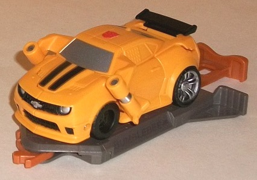
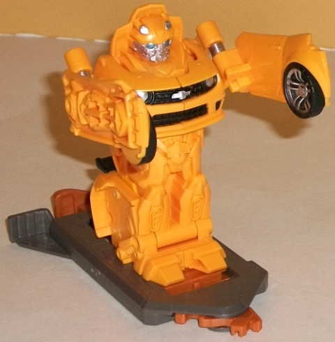
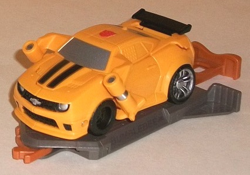
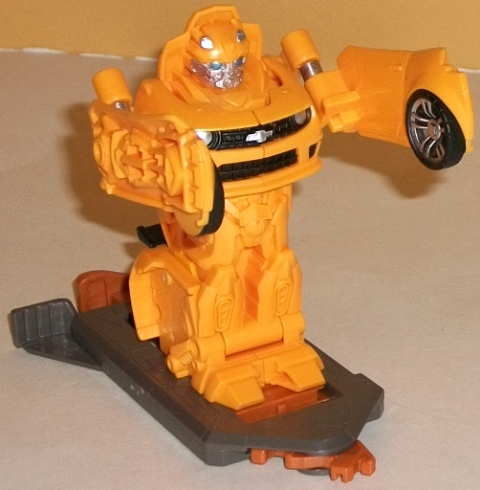
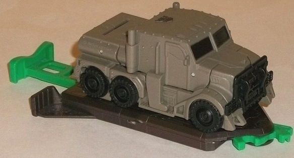
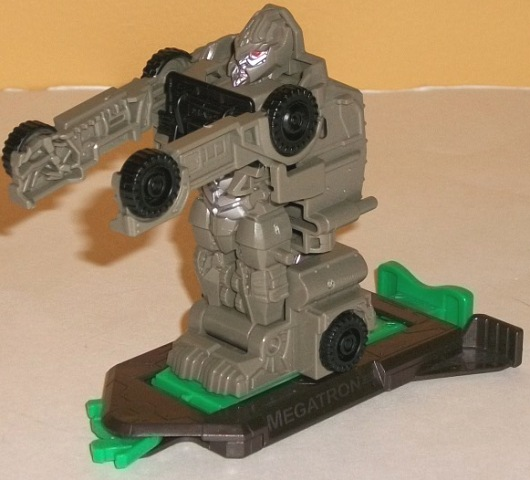

 
Allegiance : Autobot
Difficulty of Transformation : Very Easy
Color Scheme : Orangish yellow, dark gray, dull brownish orange, and some black, silver, and light metallic silvery blue
Individual Rating : 5.0
 Bumblebee
vs. Megatron (Bash Bots)
Bumblebee
vs. Megatron (Bash Bots)
Overall Rating
: 5.2
 Bumblebee
Bumblebee


Allegiance
: Autobot
Difficulty of Transformation
: Very
Easy
Color Scheme
: Orangish yellow, dark
gray, dull brownish orange, and some black, silver, and light metallic
silvery blue
Individual Rating
: 5.0
Bumblebee's Chevrolet
Camaro vehicle mode is a bit superdeformed like you'd expect from the toys
in this small subline (given the targeted age range), but even considering
that this mode definitely suffers the most out of all the alt modes in
this line. Why is fairly obvious from even a casual glance at the picture
above-- there's relatively HUGE spring-loaded hinges just sticking WAY
out there behind the front wheels, both of them making a pretty obvious
eyesore on this mode. On a lesser note, the front half of the car slopes
up at an odd angle, whereas the back half doesn't; not sure what that's
all about, there. The paint detailing is... okay, but definitely bare-bones--
the side windows aren't painted and neither are the taillights, though
at least his signature two stripes on the front hood and his front bumper
are painted up well enough. His wheels are also painted oddly, with the
back having the hubcaps painted, but the front wheels not. (They also don't
roll, but this is standard for the subline.)
Like with other Bash
Bots, to transform Bumblebee to robot mode you simply push in on the slider
on the back end of the platform he's attached to, and he automatically
unfolds into robot mode. If you want to "stick" him in robot mode, simply
slide the tab on his back end to the right; otherwise, as soon as you let
go, the slider will go back and he'll re-convert into vehicle mode. You
can detach Bumblebee from his base piece, though because of the gear on
his bottom side needed for the gimmick, he won't be able to be completely
flat on a surface in either mode. (You can still transform him like this
by simply holding onto his back piece and pushing the front end up and
then locking the aforementioned tab in place.) There's some things to like
about Bumblebee in this mode, but his proportions (again) aren't one of
them-- his arms are overly flat and just have hollow detailing of the actual
arms molded into the outside sides of them. To be fair, though, this is
true of all of the Bash Bots. Those odd shoulder hinges are only slightly
less of an eyesore in this mode, to boot. His lower body trunk is a bit
overly fat compared to his upper half, but on the plus side there's a lot
of great mold detailing there-- the pelvis in particular is quite accurate
to his movie render. His head has some small panels poking up behind it,
but otherwise it's done quite accurately here too, and the silver and light
metallic blue paint is where it needs to be, with the chest paint detailing
making sure Bumblebee isn't quite ALL orangish-yellow in this mode. Like
the other Bash Bots, Bumblebee has no articulation at all.
Megatron


Allegiance
: Decepticon
Difficulty of Transformation
: Very
Easy
Color Scheme
: Dull greenish brown,
very dark brown, jungle green, black, and some silver, red, and pale metallic
black
Individual Rating
: 5.4
For his Bash Bots version,
Megatron's truck mode gets a bit "superdeformed" just like the others in
the line, though there's not as much going on here as with most of the
others. Yes, the back third is a bit shortened and squashed-- same with
the front third, a bit-- but he could actually kinda almost pass for a
normal truck. His color scheme isn't going to be doing him any favors,
being mainly a combo of dull greenish brown and black, but they don't outright
clash and they are, of course, movie-accurate. His paint apps are all used
up in this mode on his front windows, (fake) wheels, and front grill. The
side windows aren't painted at all, and neither is the silver "tank" on
the back end-- both what I would consider necessary details. Other than
that he looks decent enough, though (particularly for this subline), with
all the little rivets and whatnot molded in everywhere.
Megatron's toy has all
the same gimmicks (and drawbacks because of those gimmicks) that the other
Bash Bots do, so I'm not going to reiterate them here-- but other than
his arms (which are way too long and two-dimensional, a problem with all
Bash Bots), his proportions are actually somewhat decent when compared
with the other figures in the subline. All of his truck parts fit nicely
enough on his back and lower legs, and there's no unsightly kibble anywhere
on him. His chest also isn't TOO overly large in comparison to his head
or body, another somewhat common problem with the figures in this subline.
The mold detailing on his robot parts is also quite good for this subline,
particularly on the head and abs, which are also painted silver (his face
with red eyes) to give at least a little more color variation in this mode.
The mold detailing for his arms is on the inside rather than the outside
on Megatron, which in my opinion looks better than the other way around,
like on Bumblebee. (On a side note, though, they didn't give his head the
"half-destroyed" look he has on his other toys. Considered too "gruesome"
for a toy aimed at this young of an audience, perhaps?)
As for the whole "Bash Bots" gimmick-- and why these toys come in packs of two-- each base is made to hook up with any of the other three Bash Bots, and then, by pushing forward on their back lever so that they convert to robot mode and move towards the front of their stands, you're supposed to wiggle them back and forth against each other (preferably with someone else "manning" the other Bash Bot), trying to catch the other Bash Bot with one of their fists hard enough to knock the opponent off their stand, transforming back and forth to dodge your opponent's punches. It doesn't work that well, honestly-- only one good "punch" is needed to knock their opponent off their stand, so it's a game that's usually over within 5 seconds. There's no counters, no electronics that emit winning or losing sounds-- just a gimmick that gets old very, very quick.
The Bash Bots Bumblebee vs. Megatron set is the stronger (SLIGHTLY) of the two sets, but that's not saying much-- they're both rather misproportioned, rather bare in terms of paint apps, they're a bit small to cost $15 U.S., they have no articluation, and their gimmick is just really lame overall. Not really recommended for anyone except big-time completists-- even with kids, the Activators and/or Go-Bots versions of the characters have more fun play value in them.
Reviews by Beastbot